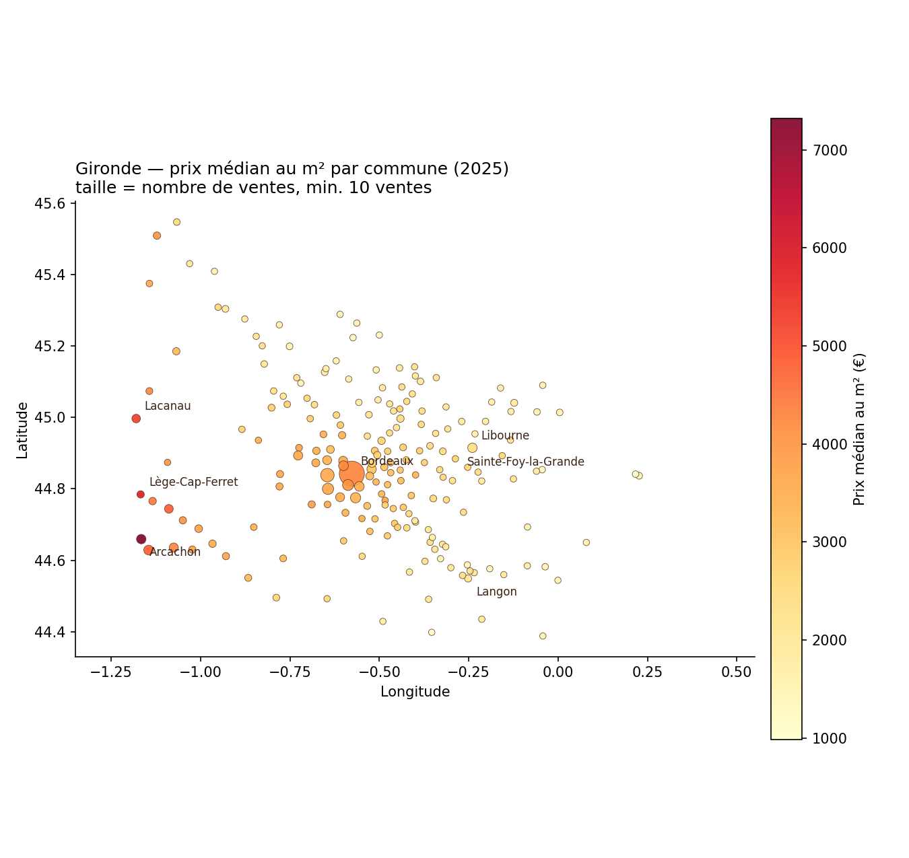

Analyse du marché immobilier girondin à partir des données DVF (Demandes de valeurs foncières) 2025, publiées par la DGFiP sur data.gouv.fr — 20 074 ventes exploitables, agrégées par commune, par mois et par zone.

Chaque point est une commune avec au moins 10 ventes sur 2025 (196 communes sur 487). La couleur indique le prix médian au m², la taille le volume de ventes.
Les prix restent globalement stables sur l'année (±3 % autour de 3 400–3 500 €/m²) : il n'y a pas de "bon mois" pour négocier un prix nettement plus bas. En revanche, juillet et octobre concentrent le plus de ventes, donc le plus de choix.
| Zone | Prix médian /m² | Surface pour 250 000 € | Ventes |
|---|
Appartements : 3 625 €/m² médian, 52 m² type. Maisons : 3 212 €/m² médian, 94 m² type.
Demandes de valeurs foncières géolocalisées (DVF), data.gouv.fr / DGFiP, Licence Ouverte 2.0.
Ventes classiques uniquement (hors VEFA, échanges, expropriations) ; maisons et appartements ; mutations à un seul lot (pour un prix au m² fiable) ; valeurs aberrantes retirées (1er/99e centile). Résultat : 20 074 ventes exploitables sur 111 712 lignes brutes.
Aucune adresse ni vente individuelle n'est affichée. Toutes les figures sont des agrégats par commune ou par mois, avec un seuil minimum de 10 ventes par commune pour la fiabilité statistique et pour éviter toute réidentification.
Analyse portant sur une seule année (2025) et un seul département. Les petites communes (moins de 10 ventes) sont exclues des figures par commune, faute d'échantillon suffisant.